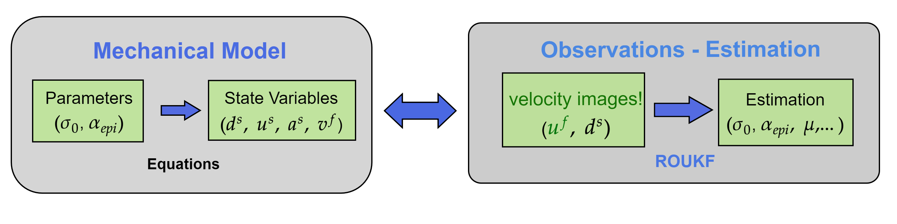
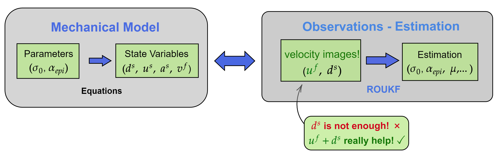
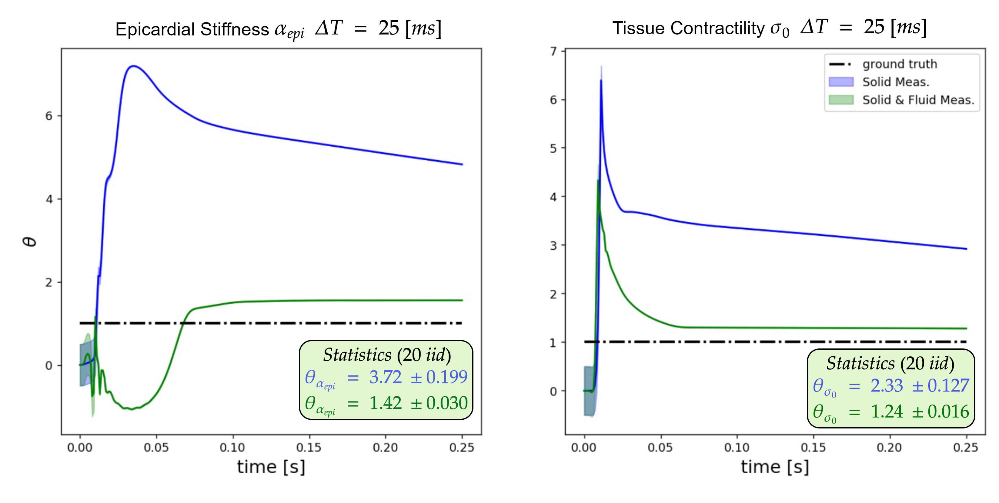

Parameter Estimation in FSI models through measurements of the Fluid
and its application to left ventricular FSI
Joint work with David Nolte and Cristóbal Bertoglio
Reidmen Aróstica - June 28, 2022, University of Groningen, The Netherlands.
Fluid Dynamics

Solid Mechanics

What's the behavior in time?

Noise for fluid and solid
Noise at 6% $\sim 2[mm]$ of maximum mag. displacement
Noise of 20% $\sim 0.31 [m/s]$ of maximum mag. velocity
General Idea💡



General Idea💡
ROUKF
Estimation of $\sigma_0$
There is improvement!
Estimation of $\alpha_{epi}, \sigma_0$ acq. time at $20 [ms]$!
There is improvement at $20 [ms]$!
Estimation of $\alpha_{epi}, \sigma_0$ acq. time at $25 [ms]$!
There is improvement at $25 [ms]$!


Summary
- To the best of the author's knowledge, 'velocity images' for parameter estimation has not been assessed before.
- Our preliminary results show that they can improve the prediction!
- Next steps (in progress): FSI (two-ways coupling) + Real Geometries.
Contact Information
- c.a.bertoglio@rug.nl
- r.a.arostica.barrera@rug.nl
Thank you!
https://bit.ly/30NtCtD